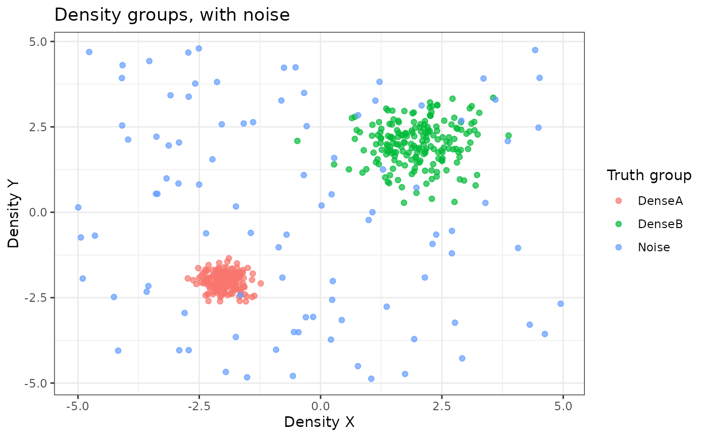

Neutral simulated clustering and phenotyping benchmark
Source:R/SimulatedPhenotypeData.R
SimulatedPhenotypeData.RdA fixed 480-participant benchmark for evaluating train-once/project-many
clustering workflows. Twelve numeric variables support at least four retained
principal components and four balanced truth groups. Three four-level
categorical variables provide strongly separated, class-dependent response
patterns for categorical-method demonstrations, while DensityX and
DensityY provide two unequal-density groups plus noise.
TruthCluster and TruthDensityGroup are retained solely for teaching and
test evaluation; they must not be used as clustering features.
Usage
data(SimulatedPhenotypeData)Format
SimulatedPhenotypeData has 480 rows: 320 training participants and
160 projection participants. It contains Var1 through Var12, CatVar1
through CatVar3, density coordinates, truth fields, and the fixed cohort
split. SimulatedPhenotypeVariableTypes is its complete labelled codebook.
Why the benchmark works
The twelve numeric variables are organized in blocks, and each cluster is high on a different block. That is the structure a clustering method is supposed to recover, and the reason a method that finds nothing here is genuinely failing rather than facing an impossible problem.
DensityX and DensityY are a separate and deliberately harder problem:
two groups of unequal density plus a noise group, for methods that are meant
to detect outliers rather than partition everything.
TruthCluster and TruthDensityGroup exist only so results can be scored.
They must never be used as clustering features.
See also
SampleData for the labelling and reporting examples, and
CreateClusterModel_SOM_MClust() or CreateClusterModel_PCA_KMeans() for the
pipelines this benchmark was built for.
Examples
data(SimulatedPhenotypeData)
# 480 participants, with the truth clusters balanced across both cohorts
dim(SimulatedPhenotypeData)
#> [1] 480 21
table(SimulatedPhenotypeData$Cohort, SimulatedPhenotypeData$TruthCluster)
#>
#> Cluster 1 Cluster 2 Cluster 3 Cluster 4
#> Projection 40 40 40 40
#> Training 80 80 80 80
# \donttest{
data(SimulatedPhenotypeVariableTypes)
ShowTable <- function(x, caption = NULL, height = NULL) {
htmltools::browsable(htmltools::HTML(as.character(
kableExtra::kable_styling(
knitr::kable(x, format = "html", caption = caption, row.names = FALSE),
bootstrap_options = c("striped", "hover", "condensed"),
full_width = FALSE
)
)))
}
# A slice: identifiers, clustering variables, and the truth labels
ShowTable(
utils::head(
SimulatedPhenotypeData[, c(
"ParticipantID", "Cohort", "TruthCluster",
paste0("Var", 1:6), "CatVar1", "DensityX", "DensityY"
)],
8
),
"First eight participants"
)
First eight participants
ParticipantID
Cohort
TruthCluster
Var1
Var2
Var3
Var4
Var5
Var6
CatVar1
DensityX
DensityY
SIM001
Training
Cluster 1
3.771776
2.7355646
2.863499
3.914050
3.059559
4.303554
Item 1: A
-2.064189
-2.481255
SIM002
Training
Cluster 1
4.232290
4.4791488
2.201403
2.872511
1.979931
4.024696
Item 1: A
-2.337098
-1.959076
SIM003
Training
Cluster 1
1.311219
1.9530996
3.169707
1.216638
1.516512
1.153082
Item 1: A
-1.920937
-1.448738
SIM004
Training
Cluster 1
1.706363
2.7635838
2.470655
2.859102
3.381282
1.753918
Item 1: A
-2.108988
-2.276855
SIM005
Training
Cluster 1
2.663587
1.8009096
2.448535
1.376916
1.658445
1.654548
Item 1: A
-1.567415
-2.191837
SIM006
Training
Cluster 1
1.275155
2.5438145
1.425758
2.698406
2.003458
2.184338
Item 1: A
-2.150969
-1.945131
SIM007
Training
Cluster 1
3.016928
2.0806831
3.405781
3.051471
2.414904
1.618949
Item 1: A
-2.308742
-1.543729
SIM008
Training
Cluster 1
1.603573
0.4652913
2.703841
2.903235
3.626558
3.405072
Item 1: A
-2.736425
-1.936006
# Cluster means, showing the block structure
df_Training <- SimulatedPhenotypeData[
SimulatedPhenotypeData$Cohort == "Training",
]
df_ClusterMeans <- stats::aggregate(
df_Training[paste0("Var", 1:12)],
by = list(Cluster = df_Training$TruthCluster),
FUN = mean
)
df_ClusterMeans[-1] <- round(df_ClusterMeans[-1], 2)
htmltools::browsable(htmltools::HTML(as.character(
FreezeTableHeader(df_ClusterMeans, full_width = TRUE)
)))
Cluster
Var1
Var2
Var3
Var4
Var5
Var6
Var7
Var8
Var9
Var10
Var11
Var12
Cluster 1
2.49
2.39
2.58
2.56
2.62
2.52
2.63
2.47
2.56
0.23
-0.10
-0.08
Cluster 2
2.70
2.67
2.58
-2.52
-2.63
-2.80
-2.75
-2.65
-2.59
-0.44
-0.44
-0.15
Cluster 3
-2.47
-2.49
-2.48
2.56
2.32
2.38
-2.35
-2.62
-2.65
0.40
0.31
0.19
Cluster 4
-2.45
-2.44
-2.43
-2.58
-2.26
-2.51
2.64
2.48
2.30
0.98
1.09
1.10
# The density variables: two unequal groups plus noise
table(SimulatedPhenotypeData$TruthDensityGroup)
#>
#> DenseA DenseB Noise
#> 192 192 96
ggplot2::ggplot(
SimulatedPhenotypeData,
ggplot2::aes(
x = DensityX, y = DensityY, colour = TruthDensityGroup
)
) +
ggplot2::geom_point(alpha = 0.7, size = 1.6) +
ggplot2::labs(
title = "Density groups, with noise",
colour = "Truth group"
) +
ggplot2::theme_bw()

# The companion codebook
ShowTable(SimulatedPhenotypeVariableTypes, "SimulatedPhenotypeVariableTypes")
SimulatedPhenotypeVariableTypes
Variable
Label
Type
Recode
Code
MissingCode
ParticipantID
Participant identifier
Categorical
No
NA
NA
Cohort
Cohort
Categorical
No
NA
NA
TruthCluster
Simulated cluster (truth only)
Categorical
No
NA
NA
TruthDensityGroup
Simulated density group (truth only)
Categorical
No
NA
NA
Var1
Var 1
Double
No
NA
NA
Var2
Var 2
Double
No
NA
NA
Var3
Var 3
Double
No
NA
NA
Var4
Var 4
Double
No
NA
NA
Var5
Var 5
Double
No
NA
NA
Var6
Var 6
Double
No
NA
NA
Var7
Var 7
Double
No
NA
NA
Var8
Var 8
Double
No
NA
NA
Var9
Var 9
Double
No
NA
NA
Var10
Var 10
Double
No
NA
NA
Var11
Var 11
Double
No
NA
NA
Var12
Var 12
Double
No
NA
NA
CatVar1
CatVar 1
Categorical
No
NA
NA
CatVar2
CatVar 2
Categorical
No
NA
NA
CatVar3
CatVar 3
Categorical
No
NA
NA
DensityX
Density X
Double
No
NA
NA
DensityY
Density Y
Double
No
NA
NA
# }